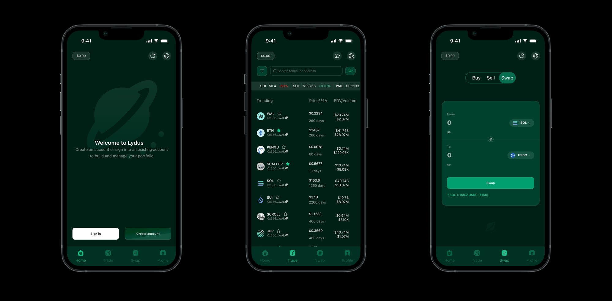
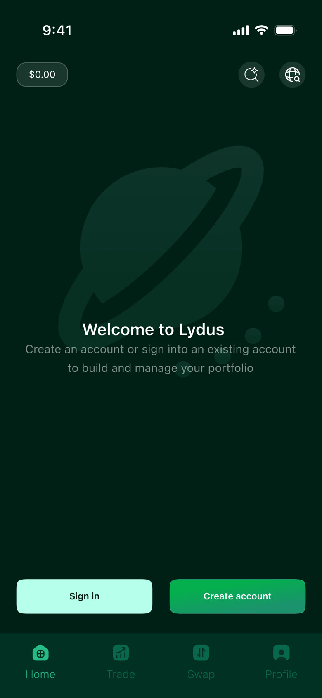
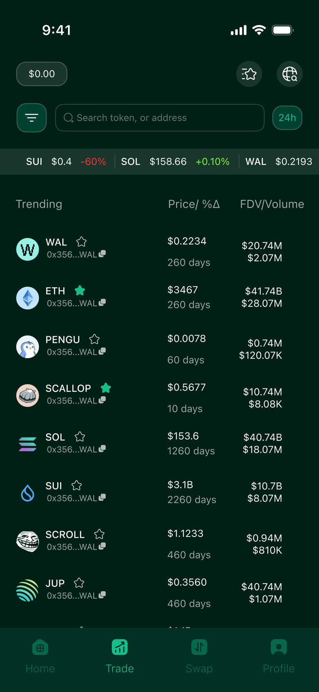
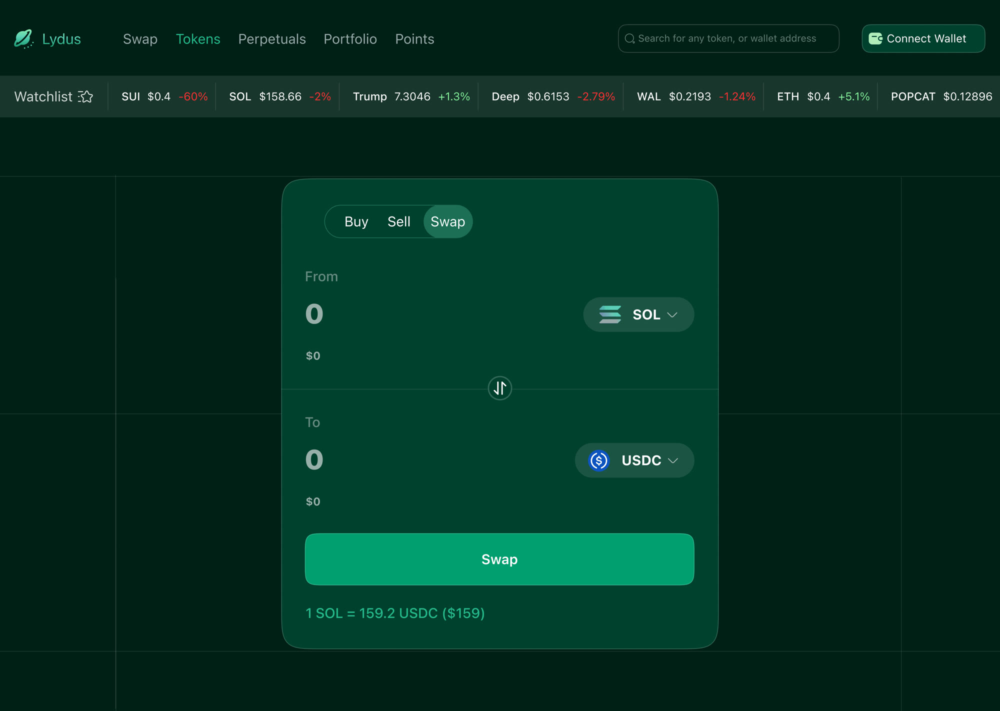

Personal project · DeFi concept
Lydus
A unified trading layer for on-chain liquidity, swaps, perpetuals, portfolio and token analytics on one surface instead of five tabs. Built for myself, in my own time, to answer a question the products I was using kept dodging.

Why I made this
This one is a personal project. No client, no brief, no deadline, a playful exploration I did in my free time because I wanted to, and because the tools I was using every day annoyed me. It was never built. I'm showing it because the thinking is real even though the product isn't.
Free time is the only place you get to design without a roadmap arguing back, so I used it to take a swing at something bigger than a feature: what a DeFi trading app would look like if you designed the whole surface at once, rather than bolting tabs onto a swap widget.
The problem
Trading on-chain means living across several tools at once. You find a token on one site, check its liquidity and FDV on another, swap on a DEX, open a perp somewhere else, then try to work out what you actually hold by opening a portfolio tracker. Each tool is fine. The seams between them are where the experience falls apart, and where mistakes get expensive.
The obvious fix is to put everything in one app. The reason it usually goes wrong is that "everything in one app" turns into a cluttered dashboard that serves nobody: too dense for someone who just wants to swap, too shallow for someone running a position.
So the question I actually set myself was narrower: can one interface hold swapping, perps, portfolio and analytics without any of them feeling like a compromise?
Design approach
Four tabs, one per intent
Home, Trade, Swap, Profile. Each maps to something a person is actually trying to do, see where I stand, find something, execute, manage what I hold, rather than to a product feature. Keeping it to four means the bottom bar stays thumb-reachable and nothing hides in an overflow menu, which is where the density problem usually starts.
Discovery is a table, not a feed
The Trade screen shows trending tokens as a scannable list with price and 24h change in one column, FDV over volume in the next, and age in days beneath the name. Those are the numbers people actually screen on. Putting FDV next to volume, rather than burying either, makes thin liquidity visible at a glance, which is the cheapest way to stop someone buying into something they can't sell out of.
Swap that admits what it's doing
Buy, Sell and Swap sit as one segmented control rather than three destinations, because they're the same mechanic wearing different names. The rate line, 1 SOL = 159.2 USDC ($159), stays visible under the button rather than appearing in a confirmation modal, so the price you're accepting is on screen while you're deciding, not after.


Same system, two sizes
The desktop view isn't a stretched phone. The four mobile tabs become a horizontal nav with room to spare, Swap, Tokens, Perpetuals, Portfolio, Points, and the extra width goes to a persistent watchlist ticker along the top, which is the one thing a trader wants glanceable at all times and which mobile genuinely can't afford the space for.
The swap card itself stays identical in structure across both. Same order, same rate line, same button placement, so muscle memory carries between devices, the part of multi-platform design that's easy to skip and annoying to live without.

What I'd need to test
Because this never shipped, there's nothing here I can call a result, and I'd rather say that than dress a personal project up as one. What I have is a set of bets, and these are the ones I'd want to put in front of real traders first:
- Does four tabs actually hold? Perpetuals live under a desktop nav item but don't have a mobile home. That's the seam in my own design, and the first thing I'd expect to break under real use.
- Is FDV-over-volume the right screening pair? It's what I look at. Whether it's what most people look at is an assumption, not a finding.
- Does the dark green survive daylight? The palette is deliberately moody. It reads well on a good screen at night and I have no idea how it performs outdoors on a cheap one.
The honest summary: this was a playground for a real question about consolidation, and it got as far as a coherent visual system and an IA I still believe in. It stops where a personal project reasonably stops, before contact with users.